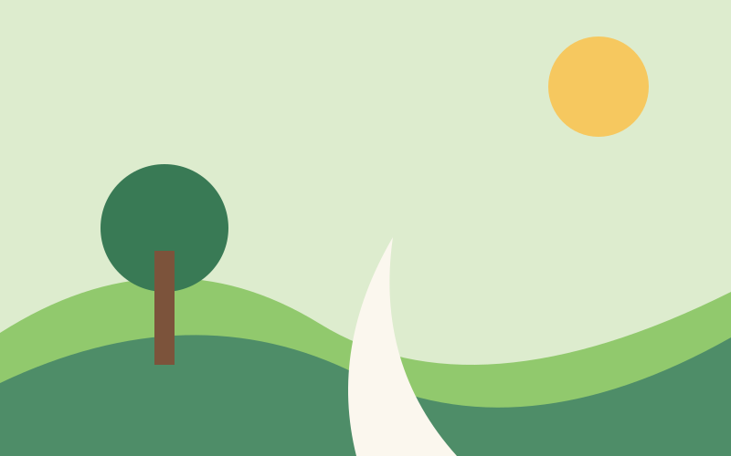
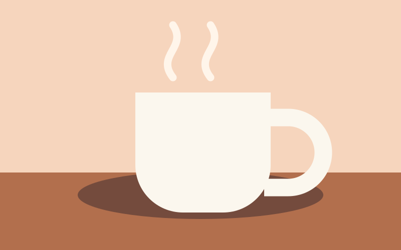

Ao ar livre
Parque do Kartódromo
★★★★☆ 4,3/5 · 3 avaliações
Espaço para caminhar e passar uma tarde tranquila.
951 m · Grátis · 1–2 h
Ver detalhesEscolha os filtros para ver algumas sugestões de passeio.
6 lugares

Ao ar livre
★★★★☆ 4,3/5 · 3 avaliações
Espaço para caminhar e passar uma tarde tranquila.
951 m · Grátis · 1–2 h
Ver detalhes
Comer
★★★★★ 4,5/5 · 2 avaliações
Café e lanches perto da região central.
349 m · Cerca de R$ 25 · 1 h
Ver detalhesCultura
★★★★★ 4,7/5 · 3 avaliações
Exposições e atividades para conhecer.
1,4 km · Grátis · 2 h
Ver detalhesComer
★★★★★ 4,5/5 · 2 avaliações
Pães e lanches para um café da manhã sem pressa.
4,8 km · Cerca de R$ 18 · 1 h
Ver detalhesCultura
★★★★☆ 4,0/5 · 2 avaliações
Exposições de arte e trabalhos de artistas locais.
6,8 km · Cerca de R$ 15 · 1-2 h
Ver detalhesAo ar livre
★★★★★ 4,5/5 · 2 avaliações
Área verde com trilhas leves e espaço para piquenique.
12,0 km · Cerca de R$ 60 · 3-4 h
Ver detalhesNenhum lugar corresponde a esses filtros. Tente outra combinação.